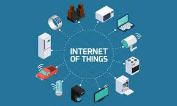
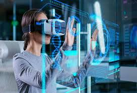

Kecerdasan buatan (AI) adalah teknologi yang memungkinkan komputer dan mesin meniru kecerdasan manusia seperti pengenalan suara, penglihatan komputer, hingga pengambilan keputusan.
Contoh: AI ChatGPT yang sering digunakan mahasiswa untuk membantu mengerjakan tugas.
Internet of Things (IoT)
IoT menghubungkan perangkat sehari-hari ke internet, memungkinkan komunikasi antar perangkat tanpa campur tangan manusia.
Contohnya: Smart home, wearable device, dan kendaraan pintar.

Virtual Reality (VR)
Virtual Reality menghadirkan dunia virtual 3D yang bisa dirasakan pengguna melalui perangkat seperti kacamata VR. Teknologi ini digunakan dalam game, edukasi, dan simulasi.

Big Data
Big Data adalah kumpulan data dalam jumlah sangat besar dan kompleks, yang tidak dapat diolah menggunakan perangkat lunak tradisional.
Ciri utamanya dikenal dengan konsep 3V: Volume, Velocity, dan Variety.
Augmented Reality (AR)
Augmented Reality atau Realitas Tertambah adalah teknologi yang menambahkan elemen digital seperti gambar, suara, atau video ke dunia nyata,
sehingga menciptakan pengalaman interaktif antara dunia nyata dan virtual.